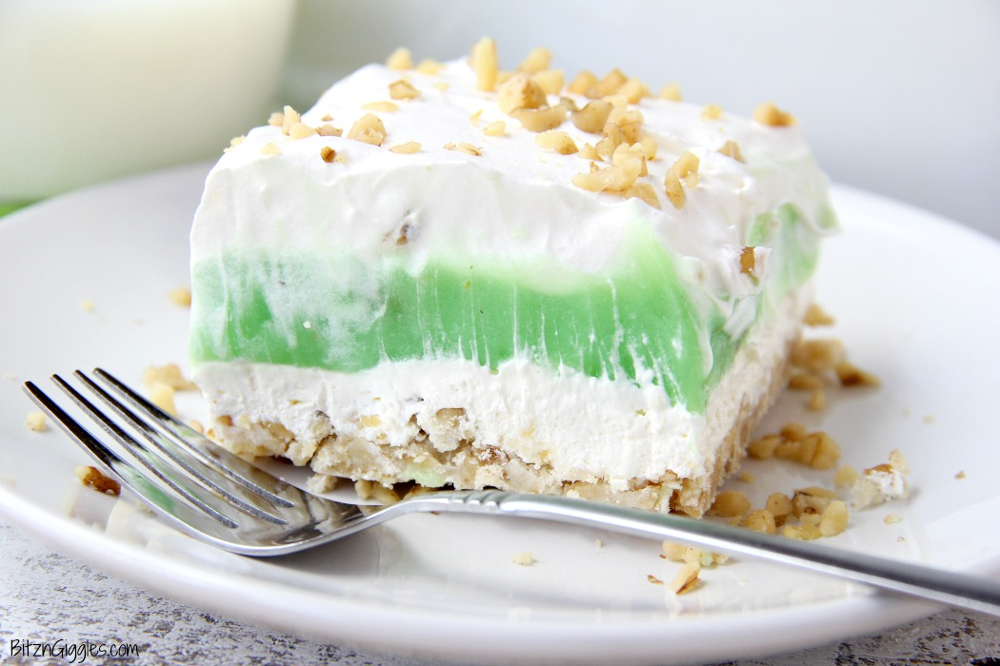

Pistachio Bars

Description
This is my favorite dessert dish. I make it every year for my birthday.
It's very simple to throw together. The hardest part is making the crust
but don't let that scare you off. Let's dive in.
Ingredients
- 1 cup of flour
- 2Tbsp of sugar
- 2/3 cup of powdered sugar
- 1/2 cup of softened butter
- 1/4 cup of crushed walnuts
- 8oz cream cheese
- 12 oz of Cool Whip (A bit less than 2 containers)
- 2 packages of 3.4oz pistachio pudding
- Maraschino cherries
- 2.5 cups of milk
Steps
Part 1: Make the crust
- Mix the flour, sugar, butter, and walnuts together until crumbly
- Lightly grease a 9"x13" pan
- Press the crumbly mixture in the pan
-
Bake the crust at 350°F for about 10 minutes or until lightly browned
- Let the crust cool
Part 2: Mix the second layer
- In a bowl, mix 8oz of cream cheese, 2/3 cup of powdered sugar
- Whisk in 6oz of Cool Whip
- Layer this mixture on top of the crust once cooled
Part 3: Make the pudding (Third layer)
- Dump both 3.4oz packages of pistachio pudding mix into a bowl
- Add 2.5 cups of milk
- Mix it together (It should be on the thicker side)
- Layer it on top of the second layer
Part 4: Add the finishing touches
- Top the third layer with 6 more ounces of Cool Whip
- Garnish with Maraschino cherries and chopped walnuts
Keep refridgerated